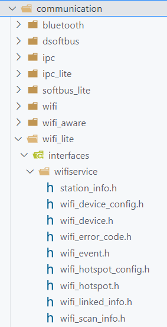
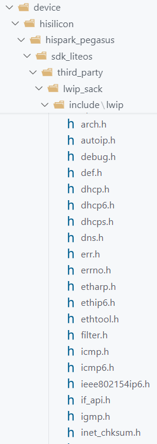
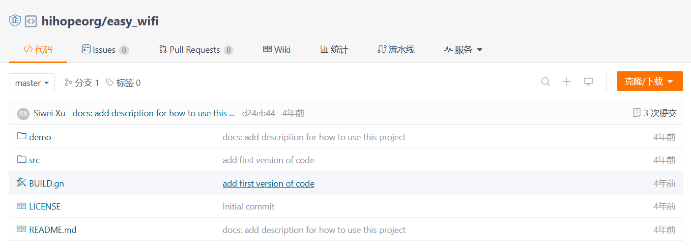
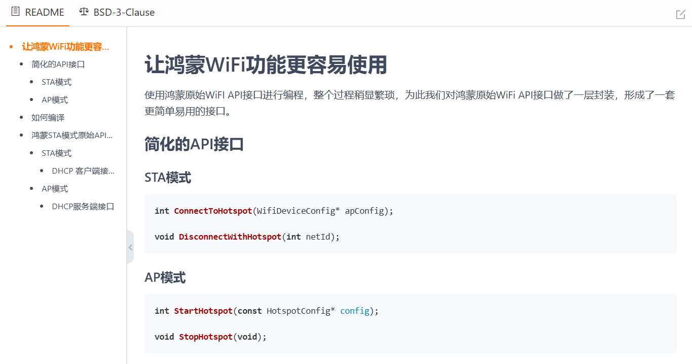

第八章 Wi-Fi
8.1 IEEE 802.11 标准¶
WiFi 是一种允许电子设备连接到一个无线局域网（WLAN）的技术，通常使用 2.4G Hz 或 5G Hz 频段，WiFi 所基于的标准是 IEEE 802.11 标准，以下是不同版本协议的特点：
- IEEE 802.11
这是最早的 WiFi 标准，于 1997 年发布，工作在 2.4GHz 频段，数据传输速率最高可达 2Mbps。由于速率较低，现在已经很少使用。
- IEEE 802.11b
1999 年发布，同样工作在 2.4GHz 频段，最高数据传输速率提高到 11Mbps。采用了直接序列扩频（DSSS）技术，具有较好的抗干扰能力，在当时得到了广泛应用。
- IEEE 802.11a
也在 1999 年发布，工作在 5GHz 频段，最高数据传输速率可达 54Mbps。虽然速率比 802.11b 有了很大提升，但由于 5GHz 频段的信号传播距离较短、穿墙能力较弱，应用范围受到一定限制。
- IEEE 802.11g
2003 年发布，工作在 2.4GHz 频段，兼容 802.11b 标准，最高数据传输速率也能达到 54Mbps。它结合了 802.11b 的兼容性和 802.11a 的高速度，成为当时市场上的主流标准。
- IEEE 802.11n
2009 年发布，同时支持 2.4GHz 和 5GHz 频段，采用了多输入多输出（MIMO）技术和信道绑定技术，最高数据传输速率可达到 600Mbps。显著提高了传输速率和覆盖范围。
- IEEE 802.11ac
2013 年发布，仅工作在 5GHz 频段，进一步扩展了信道带宽，采用了更高级的调制技术和 MIMO 技术，最高数据传输速率可达数 Gbps，主要应用于对速度要求较高的场景。
- IEEE 802.11ax（Wi-Fi 6）
2019 年正式发布，支持 2.4GHz 和 5GHz 频段，引入了正交频分多址（OFDMA）、目标唤醒时间（TWT）等技术，在高密度连接场景下，能显著提高网络效率和性能，降低设备功耗。华为是Wi-Fi 6 的主要贡献者之一，为 IEEE 802.11ax 标准贡献了 281 个提案（占总数的11.2%），以及 477 个相关专利（占总数的18.2%）。
8.2 Wi-Fi 专业术语¶
- SSID：Service Set Identifier 的缩写，即服务集标识符，通俗来说就是 WiFi 的名称。用户在搜索 WiFi 时看到的名称就是 SSID。
- BSSID：Basic Service Set Identifier 的缩写，是无线接入点（AP）的 MAC 地址，用于唯一标识一个基本服务集（BSS）中的 AP。
- ESSID：Extended Service Set Identifier 的缩写，扩展服务集标识符。它是在一个由多个接入点组成的无线网络中，用于标识整个无线网络的名称，通常与 SSID 类似，但用于更复杂的网络环境。
- AP：Access Point 的缩写，即接入点，是一种无线网络设备，它就像一个桥梁，一方面接收来自有线网络的信号，另一方面向周围空间发送无线信号，使无线设备能够连接到有线网络。
- STA：Station 的缩写，即站点，在 WiFi 网络中通常指客户端设备，如手机、电脑、平板等，它们通过连接到 AP 来访问网络。
- WEP：Wired Equivalent Privacy 的缩写，即有线等效保密，是一种早期的 WiFi 加密方式，安全性较低，容易被破解。
- WPA：Wi-Fi Protected Access 的缩写，即 WiFi 保护访问，是一种比 WEP 更安全的加密方式，分为 WPA 和 WPA2 两个版本。WPA2 是目前广泛使用的加密标准，采用了更强大的加密算法和认证机制。
- WPA3：是 WPA2 的升级版，提供了更高的安全性和更强的加密能力，支持更先进的密码学技术和安全功能。
- PSK：Pre-Shared Key 的缩写，即预共享密钥，是一种在 WiFi 网络中用于身份验证的密钥。用户在连接 WiFi 时，需要输入正确的 PSK 才能接入网络。
- Band：频段，WiFi 使用的无线频段，常见的有 2.4GHz 和 5GHz 频段。2.4GHz 频段覆盖范围广，但传输速度相对较慢，且容易受到干扰；5GHz 频段传输速度快，但覆盖范围相对较小，穿墙能力也较弱。
- Channel：信道，在频段内划分的不同传输通道，类似于公路上的车道。在 2.4GHz 频段有 13 个或 14 个信道，5GHz 频段则有更多信道。相邻信道之间可能会有干扰，合理选择信道可以提高网络性能。
- MIMO：Multiple-Input Multiple-Output 的缩写，即多输入多输出技术。它利用多个天线同时进行数据传输和接收，能够提高网络的传输速度和稳定性，增加系统容量和覆盖范围。
8.3 Hi3861的Wi-Fi特性¶
Hi3861V100芯片支持的Wi-Fi特性如下：
- 支持的Wi-Fi标准 ：IEEE 802.11b/g/n，最大速率为 72.2Mb/s。
- 工作频段 ：2.4GHz 频段，支持全部 14 个信道（ch1~ch14）。
- 带宽支持 ：支持标准 20MHz 带宽和 5MHz/10MHz 窄带宽，不支持40MHz带宽。
- 收发特性 ：单收单发，不支持MIMO。
- 安全性 ：支持 WPA 个人版/WPA2 个人版和 WPS 2.0。
- 工作模式 ：支持 STA 和 AP 模式。
- AP模式下的接入能力 ：作为 AP 时，最大支持 6 个 STA 接入。
8.4 Wi-Fi 连接过程¶
Wi-Fi 连接过程一般可以分为扫描、认证、关联和获取 IP 地址四个主要阶段，以下是具体介绍：
8.4.1 扫描阶段¶
- 主动扫描：用户设备（如手机、电脑等）开启 WiFi 功能后，会主动向周围空间发送探测请求帧，该帧中包含了设备支持的 WiFi 协议版本、频段等信息，以搜索附近的可用 WiFi 网络。每个信道都会发送，类似于在不同的频率上 “呼喊”，询问是否有 WiFi 网络存在。
- 被动扫描：除了主动扫描，设备也会进行被动扫描。此时，设备会监听周围无线网络中接入点（AP）定期发送的信标帧。信标帧中包含了 AP 的基本信息，如 SSID、支持的速率、加密方式等。设备通过接收这些信标帧，了解周围有哪些可用的 WiFi 网络及其相关参数。
8.4.2 认证阶段¶
- 开放系统认证：如果 WiFi 网络没有设置密码，通常采用开放系统认证方式。设备向 AP 发送认证请求，AP 收到后直接回应认证成功，这种认证方式几乎没有安全性，只是简单地确认设备可以连接到网络。
- 共享密钥认证：在这种认证方式下，设备和 AP 都需要事先共享一个密钥。设备向 AP 发送认证请求，AP 会发送一个挑战文本给设备，设备使用共享密钥对挑战文本进行加密后再发送给 AP，AP 对收到的加密信息进行解密验证，如果验证成功则认证通过。不过，这种方式由于密钥管理复杂且安全性有限，已较少使用。
- WPA/WPA2-PSK 认证：这是目前家庭和小型办公网络中最常用的认证方式。用户在设备上输入 WiFi 密码（即预共享密钥 PSK），设备将密码进行一定的处理后与 AP 进行交互验证。AP 会根据预先设置的密码对设备发送的信息进行验证，如果密码匹配，则认证成功。
- WPA2-Enterprise 认证：在企业或大型网络环境中，常采用 WPA2-Enterprise 认证方式。它需要使用 Radius 服务器进行身份验证，用户输入用户名和密码等凭证，设备将这些信息发送给 AP，AP 再将其转发给 Radius 服务器进行验证，验证通过后才允许设备连接网络。
8.4.3 关联阶段¶
- 发送关联请求：认证通过后，设备会向 AP 发送关联请求帧，在请求帧中包含了设备的能力信息，如支持的最大传输速率、是否支持 MIMO 技术等，以及希望与 AP 建立连接的相关参数。
- 接收关联响应：AP 收到关联请求后，会根据自身的资源情况和设备的请求信息，决定是否接受关联。如果接受，AP 会向设备发送关联响应帧，其中包含了分配给设备的一些参数，如关联标识符（AID）等，设备收到关联响应并确认成功后，就与 AP 建立了关联关系。
8.5 Wi-Fi 工作模式¶
Wi-Fi 设备可以工作在不同的模式中，在每个模式中扮演的角色都不同。常用的Wi-Fi工作模式有两种：一种是STA模式，另一种是AP模式。一个Wi-Fi设备可以同时支持多种模式，需要通过程序代码让Wi-Fi设备处于指定的模式中。
8.5.1 STA模式¶
前面提到了IEEE 802.11标准将STA定义为"支持IEEE 802.11标准的设备"，因此理论上所有的Wi-Fi设备都被称为 STA，比如手机、电脑，也包括 AP 和路由器。但是人们习惯上将STA认为是具有Wi-Fi客户端行为的设备，可以连接到AP或路由器上。所以，通常可以认为 STA 模式就是 Wi-Fi 客户端模式。后面提到 Station 或 STA 的时候，也是指Wi-Fi客户端设备。
STA会扫描附近的 AP 或路由器，选择其中一个想要连接的，经过认证、关联等步骤之后，就与它建立了连接。
8.5.2 AP模式¶
AP模式就是无线接入点模式，允许其他 Wi-Fi客户端与之建立连接，并且提供无线网络服务。
无线接入点的一般配置流程如下：
- 第一步，配置SSID。
- 第二步，选择认证类型，WPA/PSK 方式需要设置密码，Wi-Fi客户端必须提供密码才能连接。
- 第三步，选择一个支持的频段，比如 2.4GHz 或 5GHz。
- 第四步，设置一个支持的信道。
- 第五步，启动AP模式。
8.6 STA模式¶
8.6.1 Wi-Fi API¶
在vscode的c_cpp_properties.json文件添加如下includePath内容：
// Wi-Fi接口配置路径
"${workspaceFolder}/foundation/communication/wifi_lite/interfaces/wifiservice",
// TCP/IP协议栈接口（LwIP）配置路径
"${workspaceFolder}/third_party/bounds_checking_function/include", // 边界检查功能库
"${workspaceFolder}/device/hisilicon/hispark_pegasus/sdk_liteos/config", // SDK配置文件
"${workspaceFolder}/device/hisilicon/hispark_pegasus/sdk_liteos/platform/os/Huawei_LiteOS/arch", // Huawei LiteOS架构文件
"${workspaceFolder}/device/hisilicon/hispark_pegasus/sdk_liteos/platform/os/Huawei_LiteOS/kernel/include", // Huawei LiteOS内核头文件
"${workspaceFolder}/device/hisilicon/hispark_pegasus/sdk_liteos/platform/os/Huawei_LiteOS/targets/hi3861v100/include", // 特定目标平台头文件
"${workspaceFolder}/device/hisilicon/hispark_pegasus/sdk_liteos/third_party/lwip_sack/include" // LwIP SACK扩展头文件
HAL接口声明目录：
foundation\communication\wifi_lite\interfaces\wifiservice
HAL接口定义目录：
device\hisilicon\hispark_pegasus\hi3861_adapter\hals\communication\wifi_lite\wifiservice\source
STA模式接口声明文件：
foundation\communication\wifi_lite\interfaces\wifiservice\wifi_device.h

海思SDK接口声明：
device\hisilicon\hispark_pegasus\sdk_liteos\third_party\lwip_sack\include\lwip
海思SDK接口实现：
device\hisilicon\hispark_pegasus\sdk_liteos\build\libs\liblwip.a

8.6.2 扫描Wi-Fi热点¶
扫描Wi-Fi热点的标准流程如下：
第1步，使用RegisterWifiEvent接口注册Wi-Fi事件监听器。
第2步，使用EnableWifi接口开启 Wi-Fi 设备的 STA 模式。
第3步，使用Scan接口开始扫描 Wi-Fi 热点。
第4步，在扫描状态变化事件（OnWifiScanStateChanged）的回调函数中监测扫描是否完成。
第5步，等待扫描完成。
第6步，使用GetScanInfoList接口获取扫描结果。
第7步，显示扫描结果。
第8步，使用DisableWifi接口关闭 Wi-Fi设 备的 STA 模式。
8.6.3 程序实现¶
#include <stdio.h>
#include <stdint.h>
#include "ohos_init.h"
#include "cmsis_os2.h"
// HAL接口API
#include "wifi_device.h"
/**
* wifi_demo/wifi_scan_demo.c
* 扫描Wi-Fi热点案例
* -------------------------------------------------------------------------------
* 第1步，使用`RegisterWifiEvent`接口注册Wi-Fi事件监听器。
* 第2步，使用`EnableWifi`接口开启 Wi-Fi 设备的 STA 模式。
* 第3步，使用`Scan`接口开始扫描 Wi-Fi 热点。
* 第4步，在扫描状态变化事件（`OnWifiScanStateChanged`）的回调函数中监测扫描是否完成。
* 第5步，等待扫描完成。
* 第6步，使用`GetScanInfoList`接口获取扫描结果。
* 第7步，显示扫描结果。
* 第8步，使用`DisableWifi`接口关闭 Wi-Fi设 备的 STA 模式。
*/
/* 全局变量 */
// 用于表示热点扫描是否找到可用热点
int g_scanDone;
/**
* @brief 封装wifi_device_config.h文件中的WifiSecurityType数据类型
*
* @param param WifiSecurityType
* @return 字符串类型的 WifiSecurityType
*/
static char* WifiSecurityTypeName(WifiSecurityType type)
{
switch (type)
{
case WIFI_SEC_TYPE_OPEN:
return "OPEN";
case WIFI_SEC_TYPE_WEP:
return "WEP";
case WIFI_SEC_TYPE_PSK:
return "PSK";
case WIFI_SEC_TYPE_SAE:
return "SAE";
default:
break;
}
return "INVALID";
}
/**
* @brief 连接状态变化回调函数，接收的参数均声明在 wifi_linked_info.h
*
* @param state 连接状态(WifiConnState)，WIFI_CONNECTED表示连接成功，WIFI_DISCONNECTED表示连接失败
* @param info 连接信息(WifiLinkedInfo)，有多个信息参数
* @return 无
*/
void WifiConnStateCallback(int state, WifiLinkedInfo *info)
{
(void)state; // 忽略参数state
(void)info; // 忽略参数info
// 简单输出日志信息，表明函数被执行了
printf("[CALLBACK] %s %d\r\n", __FUNCTION__, __LINE__);
}
/**
* @brief 扫描状态变化回调函数
*
* @param state 扫描状态
* @param size 扫描到的热点个数
*/
void WifiScanStateCallback(int state, int size)
{
// 输出日志
printf("[CALLBACK] %s %d, state = %X, size = %d\r\n", __FUNCTION__, __LINE__, state, size);
// 扫描完成，并且找到了热点
if (state == WIFI_STATE_AVALIABLE && size > 0)
{
// 不能直接调用GetScanInfoList函数，否则会有运行时异常报错
// 可以更新全局状态变量，在另外一个线程中轮询状态变量，这种方式实现起来比较简单
// 但需要保证更新和查询操作的原子性，逻辑才是严格正确的
// 或者使用信号量进行通知，这种方式更好一些，更优雅
g_scanDone = 1;
}
}
/**
* @brief 打印扫描结果
*
*/
void WifiPrintScanResult(void)
{
// 创建一个WifiScanInfo数组，用于存放扫描结果
// WifiScanInfo 结构体定义在 wifi_scan_info.h
// WIFI_SCAN_HOTSPOT_LIMIT 声明在 wifi_scan_info.h
WifiScanInfo wifiScanInfo[WIFI_SCAN_HOTSPOT_LIMIT] = {0};
// WifiScanInfo数组大小
uint32_t wifiScanInfoSize = WIFI_SCAN_HOTSPOT_LIMIT;
// 获取扫描结果
WifiErrorCode errCode = GetScanInfoList(wifiScanInfo, &wifiScanInfoSize);
// 判断errorCode
if (errCode != WIFI_SUCCESS) {
printf("[ERROR] GetScanInfoList failed -> %d\r\n", errCode);
return;
}
// 打印扫描结果
for (int i=0 ; i < wifiScanInfoSize ; i++) {
// 创建缓存区，存储 MAC 地址字符串
static char macAddress[32] = {0};
// 取出第 i 个扫描结果(结构体)
WifiScanInfo info = wifiScanInfo[i];
// 获取bssid，即热点的 MAC 地址
unsigned char *mac = info.bssid;
// 格式化字符串，info.bssid是一个数组，大小为 WIFI_MAC_LEN=6
snprintf(macAddress, sizeof(macAddress), "%02X:%02X:%02X:%02X:%02X:%02X",
mac[0], mac[1], mac[2], mac[3], mac[4], mac[5]);
// 输出结果
printf("[INFO] AP[%d]: %s, %s, %4s, %d, %d, %d\r\n",
i,
info.ssid,
macAddress,
WifiSecurityTypeName(info.securityType),
info.rssi,
info.band,
info.frequency);
}
}
static void WifiScanTask(void* param)
{
// 返回值
WifiErrorCode errCode;
/* 绑定回调函数 */
WifiEvent eventListener = {
// 在连接状态发生变化时，调用WifiConnStateCallback回调函数
.OnWifiConnectionChanged = WifiConnStateCallback,
// 在扫描状态发生变化时，调用WifiScanStateCallback回调函数
.OnWifiScanStateChanged = WifiScanStateCallback };
osDelay(10);
/* 使用RegisterWifiEvent接口，注册WiFi事件监听器 */
errCode = RegisterWifiEvent(&eventListener);
printf("[INFO] RegisterWifiEvent: %d\r\n", errCode);
while(1)
{
/* 开启WiFi设备的STA模式 */
errCode = EnableWifi();
printf("[INFO] EnableWifi: %d\r\n", errCode);
osDelay(100);
/**
* 开始扫描WiFi热点，只是触发扫描动作，并不会等到扫描完成才返回
* 因此我们:
* 1.定义了g_scanDone全局变量判断是否扫描得到热点
* 2.定义了WifiPrintScanResult函数，通过GetScanInfoList API获取扫描结果
*/
g_scanDone = 0;
errCode = Scan();
printf("[INFO] Scan: %d\r\n", errCode);
/* 等待扫描完成 */
while (!g_scanDone)
{
osDelay(5);
}
/* 处理扫描结果 */
WifiPrintScanResult();
/* 关闭WiFi设备的STA模式 */
errCode = DisableWifi();
printf("[INFO] DisableWifi: %d\r\n", errCode);
printf("\r\n");
osDelay(500);
}
}
/* 入口函数 */
static void WifiScanEntry(void)
{
osThreadAttr_t attr = {
.name = "WifiScanTask",
.stack_size = 10240,
.priority = osPriorityNormal
};
if (osThreadNew(WifiScanTask, NULL, &attr) == NULL) {
printf("[ERROR] Thread Create Faild.\r\n");
}
}
SYS_RUN(WifiScanEntry);
模块编译脚本
static_library("wifi_demo") {
sources = [
"wifi_scan_demo.c",
]
include_dirs = [
# include "ohos_init.h"
"//utils/native/lite/include",
# include CMSIS-RTOS API V2 for OpenHarmony1.0+
"//kernel/liteos_m/kal/cmsis",
# include IoT硬件设备操作接口 for OpenHarmony1.0+：
"//base/iot_hardware/peripheral/interfaces/kits",
# include HAL接口中的WIFI接口
"//foundation\communication\wifi_lite\interfaces\wifiservice"
]
}
APP编译脚本
import("//build/lite/config/component/lite_component.gni")
lite_component("app") {
features = [
"gn_practice/application:gn_app",
"gn_practice/driver:gn_driver",
"gn_practice/library:gn_library",
"kv_store_demo:kv_store_demo",
"file_demo:file_demo",
"thread_demo:thread_demo",
"timer_demo:timer_demo",
"mutex_demo:mutex_demo",
# GPIO模块
"gpio_demo:gpio_demo",
# ADC模块
"adc_demo:adc_demo",
# OLED模块
"oled_demo:oled_demo",
# WiFi模块
"wifi_demo:wifi_demo",
]
}
8.6.4 连接Wi-Fi热点¶
连接 Wi-Fi热点的标准流程如下：
- 第1步，使用
RegisterWifiEvent接口注册 Wi-Fi 事件监听器。 - 第2步，使用
EnableWifi接口开启 Wi-Fi 设备的STA模式。 - 第3步，使用
AddDeviceConfig接口向系统添加热点配置，主要是 SSID、PSK 和加密方式等配置项。 - 第4步，使用
ConnectTo接口连接到热点上。 - 第5步，在连接状态变化（
OnWifiConnectionChanged）事件的回调函数中监测连接是否成功。 - 第6步，等待连接成功。
- 第7步，使用海思SDK接口的 DHCP 客户端API，从热点中获取IP地址。
断开Wi-Fi 热点的标准流程如下：
- 第1步，使用
netifapi_dhcp_stop接口停止 DHCP 客户端。 - 第2步，使用
Disconnect接口断开热点。 - 第3步，使用
RemoveDevice接口删除热点配置。 - 第4步，使用
DisableWifi接口关闭 Wi-Fi 设备的 STA 模式。
关于海思SDK接口，需要了解lwip：
- lwIP：A Lightweight TCPIP stack
- 瑞典计算机科学院(SICS)的 Adam Dunkels 开发的一个小型(轻量)开源的TCP/IP协议栈
- 实现的重点是在保持TCP协议主要功能的基础上减少对RAM的占用
- 仅占用几十KB RAM空间，40KB ROM空间，非常适合在嵌入式系统中使用
8.6.5 程序实现¶
#include <stdio.h>
#include <string.h>
#include <stdint.h>
#include "ohos_init.h"
#include "cmsis_os2.h"
// HAL接口API
#include "wifi_device.h"
// 海思SDK接口
// lwIP TCP/IP协议栈：网络接口API
// netifapi: Network Interface API
#include "lwip/netifapi.h"
// lwIP TCP/IP协议栈：SHELL命令API
#include "lwip/api_shell.h"
/**
* wifi_demo/wifi_connect_demo.c
* 连接Wi-Fi热点案例
* -------------------------------------------------------------------------------
* 第1步，使用`RegisterWifiEvent`接口注册 Wi-Fi 事件监听器。
* 第2步，使用`EnableWifi`接口开启 Wi-Fi 设备的STA模式。
* 第3步，使用`AddDeviceConfig`接口向系统添加热点配置，主要是 SSID、PSK 和加密方式等配置项。
* 第4步，使用`ConnectTo`接口连接到热点上。
* 第5步，在连接状态变化（`OnWifiConnectionChanged`）事件的回调函数中监测连接是否成功。
* 第6步，等待连接成功。
* 第7步，使用海思SDK接口的 DHCP 客户端API，从热点中获取IP地址。
*/
// 全局变量，用于标识连接是否成功
static int g_connected = 0;
/**
* @brief 打印Wifi连接信息
*
* @param info 传入Wifi连接信息，WifiLinkedInfo类型
*/
static void WifiPrintConnInfo(WifiLinkedInfo *info)
{
// 存储MAC地址字符串
static char macAddress[32] = {0};
// 获取MAC地址
unsigned char *mac = info->bssid;
// mac地址转换为字符串
snprintf(macAddress, sizeof(macAddress), "%02X:%02X:%02X:%02X:%02X:%02X",
mac[0], mac[1], mac[2], mac[3], mac[4], mac[5]);
// 打印信息
printf("[INFO] %d,%d,%d,%d,%d,%d,%s\r\n",
info->rssi,
info->band,
info->frequency,
info->connState,
info->disconnectedReason,
info->ipAddress,
macAddress
);
}
/**
* @brief 连接状态变化回调函数，接收的参数均声明在 wifi_linked_info.h
*
* @param state 连接状态(WifiConnState)，WIFI_CONNECTED表示连接成功，WIFI_DISCONNECTED表示连接失败
* @param info 连接信息(WifiLinkedInfo)，有多个信息参数
* @return 无
*/
static void WifiConnStateCallback(int state, WifiLinkedInfo *info)
{
(void)state; // 忽略参数state
(void)info; // 忽略参数info
// 简单输出日志信息，表明函数被执行了
printf("[CALLBACK] %s %d,state:%d\r\n", __FUNCTION__, __LINE__, state);
// 打印Wifi连接信息
WifiPrintConnInfo(info);
// 更新连接状态(全局变量)，WIFI_STATE_AVALIABLE 声明在 wifi_event.h
if (state == WIFI_STATE_AVALIABLE) {
g_connected = 1;
} else {
g_connected = 0;
}
}
/**
* @brief 扫描状态变化回调函数
*
* @param state 扫描状态
* @param size 扫描到的热点个数
*/
static void WifiScanStateCallback(int state, int size)
{
// 输出日志
printf("[CALLBACK] %s %d, state = %X, size = %d\r\n", __FUNCTION__, __LINE__, state, size);
}
/* 任务函数 */
static void WifiConnectTask(void* params)
{
/* 定义Wifi错误代码接收变量 */
WifiErrorCode errCode;
/* 创建Wifi事件监听器 */
WifiEvent eventListener = {
.OnWifiConnectionChanged = WifiConnStateCallback,
.OnWifiScanStateChanged = WifiScanStateCallback,
};
osDelay(10);
/* 注册WiFi事件监听器 */
errCode = RegisterWifiEvent(&eventListener);
printf("[INFO] RegisterWifiEvent: %d\r\n", errCode);
/* 定义要连接的指定Wifi的初始化*/
WifiDeviceConfig apConfig = {
// 热点名称
.ssid = "OpenHarmony",
// 热点密码
.preSharedKey = "123456789",
// 加密方式(PSK)
.securityType = WIFI_SEC_TYPE_PSK,
};
// 接收networkId
int netId;
/* 主循环 */
while(1)
{
// 使能station 模式.
errCode = EnableWifi();
printf("[INFO] EnableWifi: %d\r\n", errCode);
// 添加热点的初始化
errCode = AddDeviceConfig(&apConfig, &netId);
printf("[INFO] AddDeviceConfig: %d\r\n", errCode);
// 连接到热点
ConnectTo(netId);
// 等待连接
while(!g_connected)
{
osDelay(10);
}
printf("[INFO] g_connected: %d\r\n", g_connected);
osDelay(50);
// 连接成功后，调用DHCP客户端接口，从热点获取IP地址
// 获取STA模式的网络接口
struct netif *iface = netifapi_netif_find("wlan0");
// 获取网络接口成功
if (iface) {
// 启动DHCP客户端
err_t ret = netifapi_dhcp_start(iface);
printf("[INFO] netifapi_dhcp_start: %d\r\n", ret);
// 等待DHCP服务端分配IP地址
osDelay(200);
}
// 模拟一段时间的联网业务
int timeout = 60;
printf("[Warning] after %d seconds, I'll disconnect WiFi!\n", timeout);
while (timeout--)
{
osDelay(100);
}
// 断开热点之前需要停止DHCP客户端
err_t ret = netifapi_dhcp_stop(iface);
printf("[INFO] netifapi_dhcp_start: %d\r\n", ret);
// 断开热点
Disconnect();
printf("[INFO] disconnect!\r\n");
// 删除热点配置
RemoveDevice(netId);
// 关闭WiFi设备的STA模式
errCode = DisableWifi();
printf("DisableWifi: %d\r\n", errCode);
// 等待2秒
osDelay(200);
}
}
/* 入口函数 */
static void WifiScanEntry(void)
{
osThreadAttr_t attr = {
.name = "WifiConnectTask",
.stack_size = 10240,
.priority = osPriorityNormal
};
if (osThreadNew(WifiConnectTask, NULL, &attr) == NULL) {
printf("[ERROR] Thread Create Faild.\r\n");
}
}
SYS_RUN(WifiScanEntry);
模块编译脚本
static_library("wifi_demo") {
sources = [
"wifi_scan_demo.c",
"wifi_connect_demo.c",
]
include_dirs = [
# include "ohos_init.h"
"//utils/native/lite/include",
# include CMSIS-RTOS API V2 for OpenHarmony1.0+
"//kernel/liteos_m/kal/cmsis",
# include IoT硬件设备操作接口 for OpenHarmony1.0+：
"//base/iot_hardware/peripheral/interfaces/kits",
# include HAL接口中的WIFI接口
"//foundation\communication\wifi_lite\interfaces\wifiservice"
]
}
APP编译脚本
import("//build/lite/config/component/lite_component.gni")
lite_component("app") {
features = [
"gn_practice/application:gn_app",
"gn_practice/driver:gn_driver",
"gn_practice/library:gn_library",
"kv_store_demo:kv_store_demo",
"file_demo:file_demo",
"thread_demo:thread_demo",
"timer_demo:timer_demo",
"mutex_demo:mutex_demo",
# GPIO模块
"gpio_demo:gpio_demo",
# ADC模块
"adc_demo:adc_demo",
# OLED模块
"oled_demo:oled_demo",
# WiFi模块
"wifi_demo:wifi_demo",
]
}
8.7 AP模式¶
8.7.1 创建热点¶
创建Wi-Fi热点的标准流程如下：
- 第1步，使用
RegisterWifiEvent接口注册 Wi-Fi 事件监听器。
- 第2步，准备AP的配置参数，包括SSID、PSK、加密方式、频带类型、信道等。
- 第3步，使用
SetHotspotConfig接口对系统设置当前热点的配置信息。
- 第4步，使用
EnableHotspot接口开启 Wi-Fi 设备的 AP 模式。
- 第5步，在热点状态变化（
OnHotspotStateChanged）事件的回调函数中，监测热点是否成功开启。 - 第6步，等待热点成功开启。
- 第7步，使用
netifapi_netif_set_addr接口设置热点的IP地址、子网掩码、网关等信息。 - 第8步，使用
netifapi_dhcps_start接口启动 DHCP 服务。
关闭Wi-Fi热点的标准流程如下：
- 第1步，使用
netifapi_dhcps_stop接口停止 DHCP 服务。 - 第2步，使用
UnRegisterWifiEvent接口解除事件监听。 - 第3步，使用
DisableHotspot接口关闭Wi-Fi设备的AP模式。
8.7.2 DHCP服务¶
在创建Wi-Fi热点之后，还需要给连接到热点的Wi-Fi客户端分配IP地址。分配IP地址可以使用DHCP服务来完成。
- DHCP
DHCP是动态主机配置协议，用于自动给Wi-Fi客户端分配IP地址和子网掩码。OpenHarmony轻量设备的DHCP功能是由海思SDK中集成的第三方组件LwIP提供的。
- DHCP IP地址池
DHCP提供了一个IP地址池，供Wi-Fi客户端来使用。但是请注意，海思SDK接口强制配置了这个IP地址池的起始IP地址和IP地址的个数，我们是无法改动的。所以，netifapi_dhcps start接口的相应参数都要设置为0（使用接口内部的默认值）。
8.7.3 程序实现¶
#include <stdio.h>
#include <string.h>
#include <stdint.h>
#include "ohos_init.h"
#include "cmsis_os2.h"
// HAL接口API
#include "wifi_hotspot.h"
// 海思SDK接口
// lwIP TCP/IP协议栈：网络接口API
// netifapi: Network Interface API
#include "lwip/netifapi.h"
/**
* wifi_demo/wifi_hotspot_demo.c
* 创建Wi-Fi热点案例
* -------------------------------------------------------------------------------
* 第1步，使用`RegisterWifiEvent`接口注册 Wi-Fi 事件监听器。
* 第2步，准备AP的配置参数，包括SSID、PSK、加密方式、频带类型、信道等。
* 第3步，使用`SetHotspotConfig`接口对系统设置当前热点的配置信息。
* 第4步，使用`EnableHotspot`接口开启 Wi-Fi 设备的 AP 模式。
* 第5步，在热点状态变化（`OnHotspotStateChanged`）事件的回调函数中，监测热点是否成功开启。
* 第6步，等待热点成功开启。
* 第7步，使用`netifapi_netif_set_addr`接口设置热点的IP地址、子网掩码、网关等信息。
* 第8步，使用`netifapi_dhcps_start`接口启动 DHCP 服务。
*/
// 热点连接成功标识
static int g_hotspotStarted;
// 已经连接热点的站点个数
static int g_joinedStations;
// 网络接口
static struct netif *g_iface;
/**
* @brief 打印连接热点的站点信息
*
* @param info 站点信息
*/
static void HotspotPrintStaInfo(StationInfo *info)
{
// 存储MAC地址字符串
static char macAddress[32] = {0};
// 获取MAC地址
unsigned char *mac = info->macAddress;
// mac地址转换为字符串
snprintf(macAddress, sizeof(macAddress), "%02X:%02X:%02X:%02X:%02X:%02X",
mac[0], mac[1], mac[2], mac[3], mac[4], mac[5]);
printf("[CALLBACK] HotspotStaJoin: %s,%s\r\n",
macAddress,
info->name);
}
/**
* @brief 热点状态变化回调函数
*
* @param state 热点状态
*/
static void HotspotStateCallback(int state)
{
/* 输出日志 */
printf("[CALLBACK] OnHotspotStateChanged: %d.\r\n", state);
/* 更新状态标识 */
if (state == WIFI_HOTSPOT_ACTIVE) {
g_hotspotStarted = 1;
} else {
g_hotspotStarted = 0;
}
}
/**
* @brief 站点加入热点回调函数
*
* @param info 站点信息
*/
static void HotspotStaJoinCallback(StationInfo *info)
{
g_joinedStations++;
/* 打印连接站点的信息 */
HotspotPrintStaInfo(info);
printf("[CALLBACK] +StaJoinCallback: active stations = %d.\r\n", g_joinedStations);
}
/**
* @brief 站点断开热点回调函数
*
* @param info 站点信息
*/
static void HotspotStaLeaveCallback(StationInfo *info)
{
g_joinedStations--;
/* 打印连接站点的信息 */
HotspotPrintStaInfo(info);
printf("[CALLBACK] -StaLeaveCallback: active stations = %d.\r\n", g_joinedStations);
}
/**
* @brief 打开热点
*
* @param hsConfig 热点初始化
* @param wifiEvent 事件监听绑定的回调函数
*
*/
static void HotspotStart(HotspotConfig *hsConfig, WifiEvent* wifiEvent)
{
/* 接收错误代码 */
WifiErrorCode errCode;
/* 创建Wifi事件监听器 */
errCode = RegisterWifiEvent(wifiEvent);
printf("[INFO] RegisterWifiEvent: %d\r\n", errCode);
/* 设置当前热点的配置信息 */
errCode = SetHotspotConfig(hsConfig);
printf("[INFO] SetHotspotConfig: %d\r\n", errCode);
/* 开启AP模式 */
// 初始化热点连接成功标识
g_hotspotStarted = 0;
errCode = EnableHotspot();
printf("[INFO] EnableHotspot: %d\r\n", errCode);
/* 等待热点开启成功 */
while (!g_hotspotStarted)
{
osDelay(10);
}
printf("g_hotspotStarted = %d.\r\n", g_hotspotStarted);
/**
* @brief 热点开启成功之后，需要启动DHCP服务端，Hi3861使用如下接口：
* 使用netifapi_netif_find("ap0")获取AP模式的网络接口
* 使用netifapi_netif_set_addr接口设置热点本身的IP地址、网关、子网掩码
* 使用netifapi_dhcps_start接口启动DHCP服务端
* 使用netifapi_dhcps_stop接口停止DHCP服务端
*/
// 获取网络接口
g_iface = netifapi_netif_find("ap0");
if (g_iface) {
// 存储IP地址
ip4_addr_t ipaddr;
// 存储网关
ip4_addr_t gateway;
// 存储子网掩码
ip4_addr_t netmask;
// 设置IP地址
IP4_ADDR(&ipaddr, 192, 168, 12, 1); /* input your IP for example: 192.168.12.1 */
// 设置子网掩码
IP4_ADDR(&netmask, 255, 255, 255, 0); /* input your netmask for example: 255.255.255.0 */
// 设置网关
IP4_ADDR(&gateway, 192, 168, 12, 1); /* input your gateway for example: 192.168.12.1 */
// 设置热点的IP地址、子网掩码、网关
err_t ret = netifapi_netif_set_addr(g_iface, &ipaddr, &netmask, &gateway);
// 打印接口调用结果
printf("[INFO] netifapi_netif_set_addr: %d\r\n", ret);
// 停止DHCP服务 (DHCP服务有可能默认是开启状态)
ret = netifapi_dhcps_stop(g_iface);
// 打印接口调用结果
printf("[INFO] netifapi_dhcps_stop: %d\r\n", ret);
// 启动DHCP服务
ret = netifapi_dhcps_start(g_iface, 0, 0);
// 打印接口调用结果
printf("[INFO] netifapi_dhcps_start: %d\r\n", ret);
}
}
/**
* @brief 关闭热点
*
* @param wifiEvent 事件监听绑定的回调函数
*
*/
static void HotspotStop(WifiEvent* wifiEvent)
{
/* 如果之前已经成功获取网络接口 */
if (g_iface) {
// 停止DHCP服务
err_t ret = netifapi_dhcps_stop(g_iface);
// 打印接口调用结果
printf("netifapi_dhcps_stop: %d\r\n", ret);
}
/* 接触Wifi事件监听 */
WifiErrorCode errCode = UnRegisterWifiEvent(&wifiEvent);
printf("[INFO] UnRegisterWifiEvent: %d\r\n", errCode);
/* 关闭热点 */
errCode = DisableHotspot();
printf("[INFO] DisableHotspot: %d\r\n", errCode);
}
static void WifiHotspotTask(void* params)
{
/* 接收错误代码 */
WifiErrorCode errCode;
/* 热点初始化 */
HotspotConfig hsConfig = {
.ssid = "BearPi",
.preSharedKey = "openharmony",
.securityType = WIFI_SEC_TYPE_PSK,
.band = HOTSPOT_BAND_TYPE_2G,
.channelNum = 7,
};
osDelay(10);
/* 绑定回调函数 */
WifiEvent eventListener = {
// 热点状态变化
.OnHotspotStateChanged = HotspotStateCallback,
// 站点已连接
.OnHotspotStaJoin = HotspotStaJoinCallback,
// 站点断开连接
.OnHotspotStaLeave = HotspotStaLeaveCallback,
};
/* 开启热点 */
printf("[INFO] starting AP ...\r\n");
HotspotStart(&hsConfig, &eventListener);
printf("[INFO] StartHotspot: %d\r\n", errCode);
/* 热点将开启1分钟 */
int timeout = 60;
printf("After %d seconds Ap will turn off!\r\n", timeout);
while (timeout--)
{
osDelay(100);
}
/* 关闭热点 */
printf("[INFO] stop AP ...\r\n");
HotspotStop(&eventListener);
printf("[INFO] AP stopped.\r\n");
}
/* 入口函数 */
static void HotspotEntry(void)
{
osThreadAttr_t attr = {
.name = "WifiHotspotTask",
.stack_size = 10240,
.priority = osPriorityNormal
};
if (osThreadNew(WifiHotspotTask, NULL, &attr) == NULL) {
printf("[ERROR] Thread Create Faild.\r\n");
}
}
SYS_RUN(HotspotEntry);
模块编译脚本
static_library("wifi_demo") {
sources = [
"wifi_scan_demo.c",
"wifi_connect_demo.c",
"wifi_hotspot_demo.c",
]
include_dirs = [
# include "ohos_init.h"
"//utils/native/lite/include",
# include CMSIS-RTOS API V2 for OpenHarmony1.0+
"//kernel/liteos_m/kal/cmsis",
# include IoT硬件设备操作接口 for OpenHarmony1.0+：
"//base/iot_hardware/peripheral/interfaces/kits",
# include HAL接口中的WIFI接口
"//foundation\communication\wifi_lite\interfaces\wifiservice"
]
}
APP编译脚本
import("//build/lite/config/component/lite_component.gni")
lite_component("app") {
features = [
"gn_practice/application:gn_app",
"gn_practice/driver:gn_driver",
"gn_practice/library:gn_library",
"kv_store_demo:kv_store_demo",
"file_demo:file_demo",
"thread_demo:thread_demo",
"timer_demo:timer_demo",
"mutex_demo:mutex_demo",
# GPIO模块
"gpio_demo:gpio_demo",
# ADC模块
"adc_demo:adc_demo",
# OLED模块
"oled_demo:oled_demo",
# WiFi模块
"wifi_demo:wifi_demo",
]
}
8.8 EasyWiFi¶
使用Open Harmony的WiFi接口连接WiFI是比较繁琐的，但依然建议跟着写一遍。EasyWiFi是一个开源项目，由润开鸿公司开源，旨在 让鸿蒙WiFi功能更容易使用。

开源地址：easy_wifi: 让WiFi IoT套件的WiFi功能更容易使用
下载源码，放置在applications/sample/wifi-iot/app目录：
本章暂不使用该模块，到MQTT章节会交代后续的使用配置，有兴趣的可以去开源地址学习API使用。
